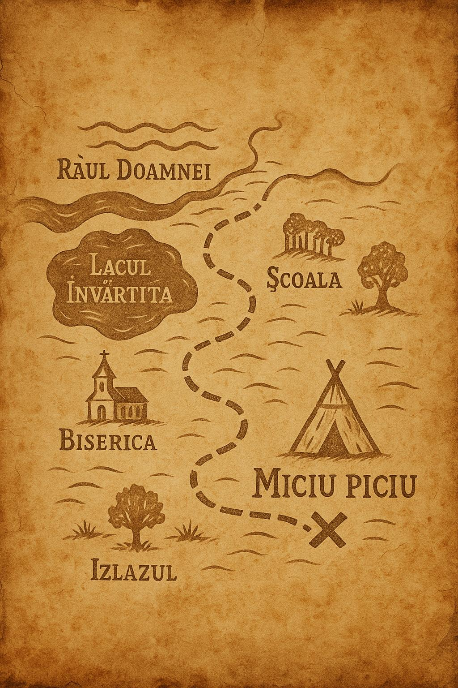

Dacă îți pare că ești norocos că te-ai născut în era tehnologiei, apasă aici:
Dacă ai nevoie întotdeauna de poze pentru a înțelege anumite informații, privește 
Dacă ai visat mereu să fii un mic explorator, asta este șansa ta 🙂, ne găsești aici: Nucșoara-Grui Argeș, Izlaz
Dar îți putem oferi oricând o mână de ajutor în caz că ai nevoie!
Sună-ne oricând: 0732857999